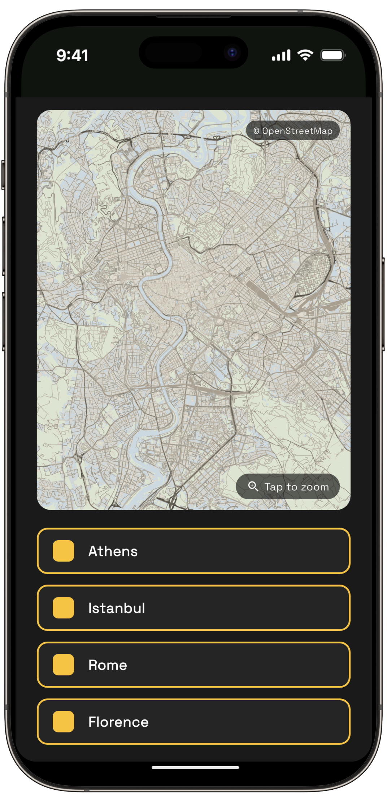
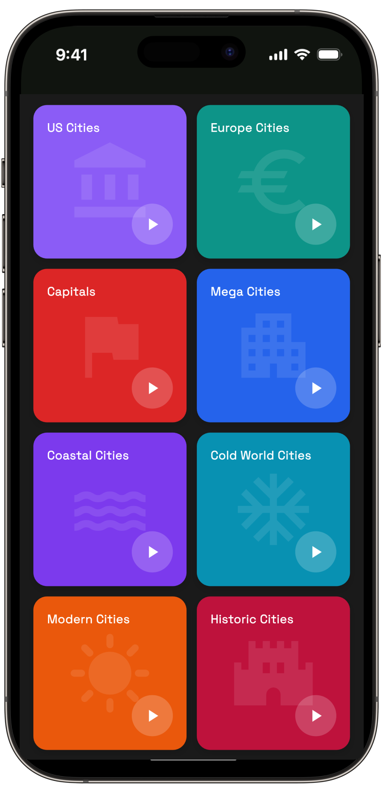
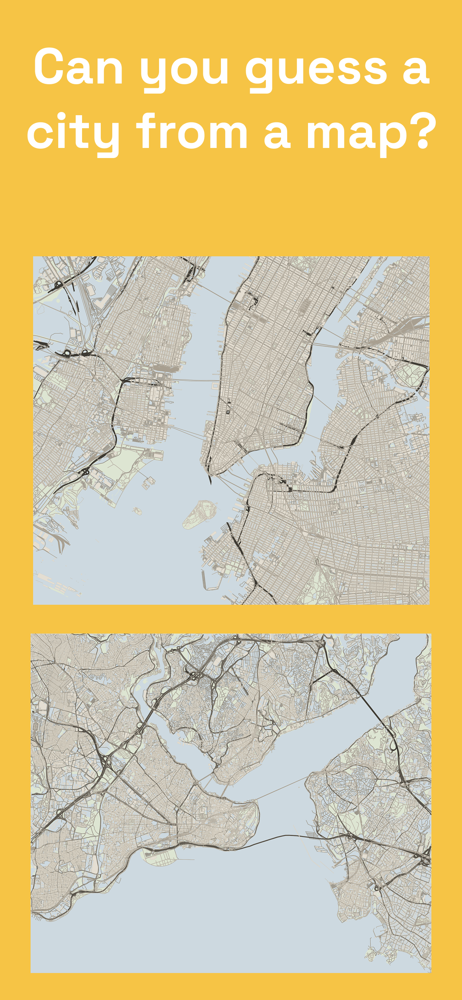
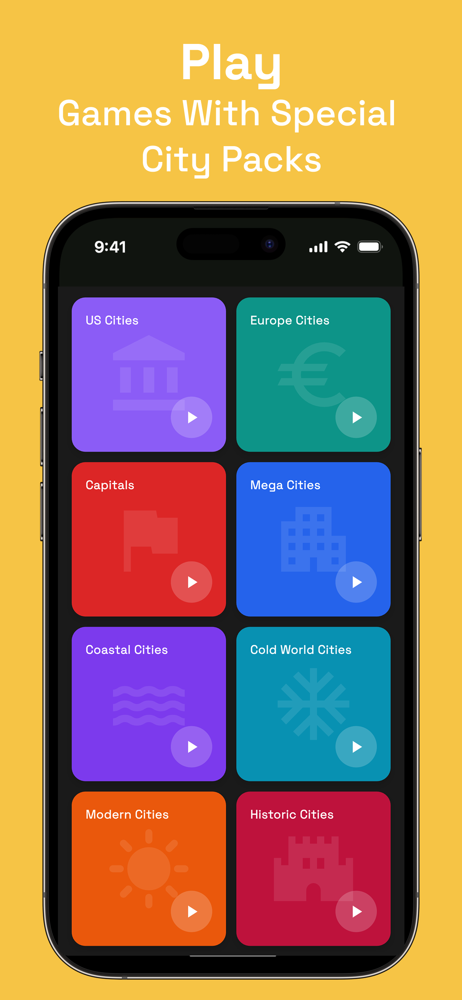
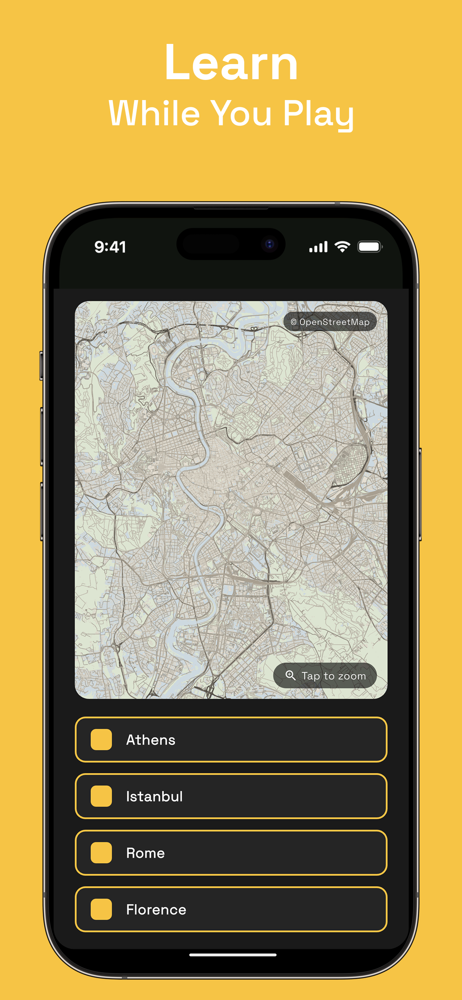
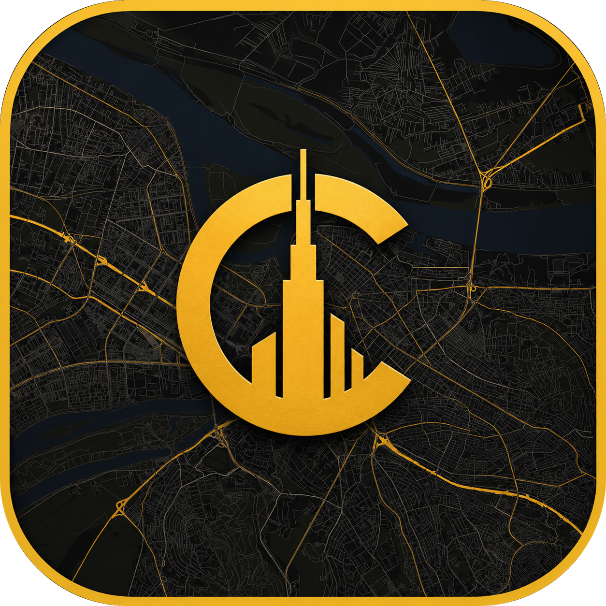

Can You Guess a City
From Its Map Alone?
A geography quiz game built on real street maps. Study the coastline, the rivers, the street grid — then make your call.
Themed city packs. Multiple map styles. Quick rounds.
Free to play. No geography degree needed.


The idea
Every city has a fingerprint.
Manhattan's grid. Istanbul split by the Bosphorus. Rome's tangle of streets wrapped around a winding river. Once you start looking at cities as maps, you can't unsee it — every place has a shape that gives it away.
City Map Guesser turns that into a game. Each round shows you a real street map with no labels. Your job: figure out which city you're looking at. Sounds easy — until you're staring at a coastline trying to remember which side of the world it belongs to.
The more you play, the more you notice: how rivers shape cities, how old towns differ from planned grids, how coastlines and harbors define a skyline you've only ever seen from the ground.
How it works
Three steps per round.
Study the map
A real, unlabeled street map appears. Look at the rivers, the coastline, the street pattern. Tap to zoom in for a closer look.
Make your guess
Pick the right city from the options. Is that winding river the Tiber or the Seine? Trust your instincts — or your knowledge.
Learn and level up
See the answer, remember the shape, and move on. Round by round, you build a mental atlas of the world's cities.
See it in action
Built for map lovers




What's inside
A geography game with depth.
Themed City Packs
US Cities, Europe Cities, Capitals, Mega Cities, Coastal, Historic and more — pick a pack that matches your mood and expertise.
Real Street Maps
Every round uses genuine OpenStreetMap data. No cartoon maps — the same streets, rivers and coastlines you'd see in an atlas.
Tap to Zoom
Not sure from a distance? Zoom in and inspect the details — the airport, the old town, the harbor — before you commit to an answer.
Different Map Styles
Play the same city in blueprint blue, midnight dark, minimal ink and more. Each style makes you see the city differently.
Quick Rounds
A round takes seconds, a game takes minutes. Perfect for a commute, a coffee break, or "just one more" at midnight.
Learn While You Play
Geography knowledge that sticks — because you earned it by recognizing Istanbul's strait or Manhattan's grid, not by memorizing a list.
App available for download on iOS and Android

City Map GuesserCity packs